1과목: 전기자기학
1. 유전율 ε, 전계의 세기 E인 유전체의 단위 체적에 축적되는 에너지는?
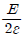
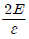
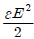
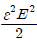
2. 반경 a인 구도체에 -Q 의 전하를 주고 구도체의 중심 O에서 10a 되는 점 P에 10Q의 점전하를 놓았을 때, 직선 OP 위의 점 중에서 전위가 0이 되는 지점과 구도체의 중심 O와의 거리는?
3. 그림과 같은 동축 원통의 왕복 전류회로가 있다. 도체 단면에 고르게 퍼진 일정 크기의 전류가 내부 도체로 흘러 들어가고 외부 도체로 흘러나올 때, 전류에 의해 생기는 자계에 대하여 틀린 것은?
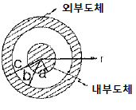
4. 내구의 반지름이 a[m], 외구의 내 반지름이 b[m]인 동심 구형 콘덴서의 내구의 반지름과 외구의 내 반지름을 각각 2a, 2b로 증가시키면 이 동심구형 콘덴서의 정전용량은 몇 배로 되는가?
5. 다음 중 틀린 것은?
6. 그림과 같은 단극 유도장치에서 자속밀도 B[T]로 균일하게 반지름 a[m]인 원통형 영구자석 중심축 주위를 각속도 ω[rad/s]로 회전하고 있다. 이 때 브러시(접촉자)에서 인출되어 저항 R[Ω]에 흐르는 전류는 몇 [A]인가?
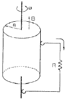
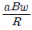
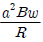
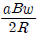
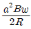
7. 다음 중 식이 틀린 것은?
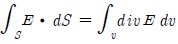
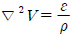
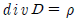
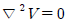
8. 영구자석에 관한 설명으로 틀린 것은?
9. 원점에서 점 (-2,1,2)로 향하는 단위 벡터를 a1이라 할 때 y=0 인 평면에 평행이고, a1에 수직인 단위벡터 a2는?
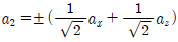
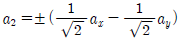
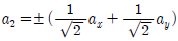
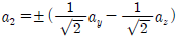
10. 자극의 세기가 8×10-6[wb], 길이가 3[cm]인 막대자석을 120[AT/m]의 평등 자계 내에 자력선과 30°의 각도로 놓으면 이 막대자석이 받는 회전력은 몇 [Nㆍm]인가?
11. 수직 편파는?
12. 자기 쌍극자에 의한 자위 U[A]에 해당되는 것은? (단, 자기 쌍극자의 자기 모멘트 M[Wbㆍm], 쌍극자의 중심으로부터의 거리는 r[m], 쌍극자의 정방향과의 각도는 θ 라 한다.)
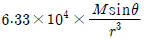
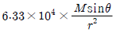
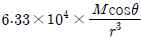
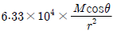
13. 두 개의 자극판이 놓여 있을 때, 자계의 세기 H[AT/m],, 자속밀도B[Wb/m2] , 투자율 μ[H/m]인곳의 자계의 에너지 밀도[J/m3]는?
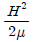
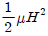
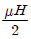
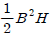
14. 길이 l[m], 단면적의 반지름 a[m]인 원통이 길이 방향으로 균일하게 자화되어 자화의 세기가 J[Wb/m2]인 경우, 원통 양단에서의 전자극의 세기 m[Wb]은?
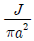
15. 평면 전자파에서 전계의 세기가
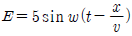
[μV/m]인 공기 중에서의 자계의 세기는 몇 [μA/m]인가?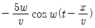
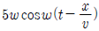
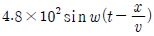
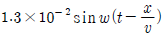
16. 비유전율이 10인 유전체를 5[V/m]인 전계내에 놓으면 유전체의 표면 전하밀도는 몇 [C/m2]인가? (단, 유전체의 표면과 전계는 직각이다.)
17. 내경의 반지름이 1mm, 외경의 반지름이 3mm인 동축 케이블의 단위 길이 당 인덕턴스는 약 몇 μH/m인가? (단, 이때 μr=1이며, 내부 인덕턴스는 무시한다.)
18. 평면 도체 표면에서 d[m] 의 거리에 점전하 Q[C]가 있을 때 이 전하를 무한원까지 운반하는데 필요한 일은 몇 J 인가?
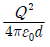
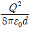
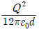
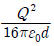
19. 반경 r1, r2인 동심구가 있다. 반경 r1, r2인 구 껍질에 각각 +Q1, +Q2의 전하가 분포되어 있는 경우 r1≤ r ≤ r2에서의 전위는
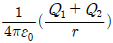
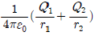
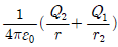
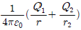
20. 다음 ( )안의 (ㄱ)과 (ㄴ)에 들어갈 알맞은 내용은?
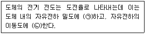
2과목: 전력공학
21. 경간 200m의 지지점이 수평인 가공 전선로가 있다. 전선 1m의 하중은 2kg/m, 풍압하중은 없는 것으로 하고 전선의 인장 하중은 4000kg, 안전율 2.2로 하면 이도는 몇 m인가?
22. 3상 송전선로의 전압이 66000V, 주파수가 60Hz, 길이가 10km, 1선당 정전용량이 0.3464μF/km인 무부하 충전전류는 약 몇 A인가?
23. 중거리 송전선로의 π형 회로에서 송전단 전류 Is는? (단, Z,Y는 선로의 직렬임피던스와 병렬 어드미턴스이고,Er, Ir은 수전단 전압과 전류이다.)
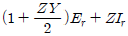
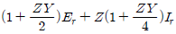
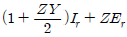
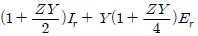
24. 선택지락 계전기의 용도를 옳게 설명한 것은?
25. 그림과 같은 선로의 등가선간 거리는 몇 m인가?
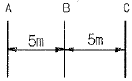
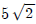
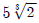
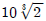
26. 송배전 계통에 발생하는 이상전압의 내부적 원인이 아닌 것은?
27. 수력 발전소를 건설할 때 낙차를 취하는 방법으로 적합하지 않은 것은?
28. 초고압용 차단기에서 개폐 저항기를 사용하는 이유 중 가장 타당한 것은?
29. 이상전압의 파고치를 저감시켜 기기를 보호하기 위하여 설치하는 것은?
30. 보일러 급수 중의 염류 등이 굳어서 내벽에 부착되어 보일러 열전도와 물의 순환을 방해하며 내면의 수관벽을 과열시켜 파열을 일으키게 하는 원인이 되는 것은?
31. 송전선로에서 고조파 제거 방법이 아닌 것은?
32. 전기 공급 시 사람의 감전, 전기 기계류의 손상을 방지하기 위한 시설물이 아닌 것은?
33. 선로에 따라 균일하게 부하가 분포된 선로의 전력 손실은 이들 부하가 선로의 말단에 집중적으로 접속되어 있을 때 보다 어떻게 되는가?
34. 서지파가 파동임피던스 Z1의 선로 측에서 파동 임피던스 Z2의 선로 측으로 진행할 때 반사계수β는?
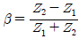
35. 일방적인 비접지 3상 송전선로의 1선 지락 고장 발생시 각 상의 전압은 어떻게 되는가?
36. 전력용 콘덴서를 변전소에 설치할 때 직렬 리액터를 설치 하고자 한다. 직렬 리액터의 용량을 결정하는 식은? (단, f0는 전원의 기본 주파수, C는 역률 개선용 콘덴서 용량 L은 직렬 리액터의 용량이다.)
37. Y결선된 발전기에서 3상 단락사고가 발생한 경우 전류에 관한 식 중 옳은 것은? (단,Z0, Z1, Z2는 영상, 정상, 역상 임피던스 이다.)
38. 같은 선로와 같은 부하에서 교류 단상 3선식은 단상 2선식에 비하여 전압 강하와 배전 효율은 어떻게 되는가?
39. 발전 전력량 E[kWh], 연료 소비량 W[kg], 연료의 발열량 C[kcal/kg]인 화력 발전소의 열효율 n[%]는?
40. 고장 즉시 동작하는 특성을 갖는 계전기는?
3과목: 전기기기
41. 2대의 동기 발전기가 병렬 운전하고 있을 때, 동기화 전류가 흐르는 경우는?
42. 3대의 단상 변압기를 Δ-Y로 결선하고 1차 단자전압 V1, 1차 전류 I1이라 하면 2차 단자전압 V2와 2차전류 I2의 값은? (단, 권수비는 a이고, 저항, 리액턴스, 여자전류는 무시한다.)
43. 1000kW, 500V의 직류 발전기가 있다. 회전수 246rpm, 슬롯수 192, 각 슬롯내의 도체수 6, 극수는 12이다. 전부하에서의 자속수 [Wb]는? (단, 전기자 저항은 0.006Ω이고, 전기자 권선은 단중 중권이다.)
44. 유도 전동기에서 크로우링(crawling) 현상으로 맞는 것은?
45. 직류 전동기를 교류용으로 사용하기 위한 대책이 아닌 것은?
46. 60kW, 4극, 전기자 도체의 수 300개, 중권으로 결선된 직류 발전기가 있다. 매극당 자속은 0.⑤Wb이고, 회전속도는 1200rpm이다. 이 직류 발전기가 전부하에 전력을 공급할 때 직렬로 연결된 전기자 도체에 흐르는 전류[A]는
47. 50Hz로 설계된 3상 유도전동기를 60Hz에 사용하는 경우 단자전압을 110%로 높일 때 일어나는 현상이 아닌 것은
48. 직류 전동기의 역기전력이 220V, 분당 회전수가 1200rpm일 때, 토크가 15kgㆍm가 발생한다면 전기자 전류는 약 몇 A인가?
49. 5KVA 3300/210V, 단상 변압기의 단락시험에서 임피던스 전압 120V, 동손 150W라 하면 퍼센트 저항강하는 몇 %인가?
50. 주파수가 일정한 3상 유도전동기의 전원전압이 80%로 감소하였다면, 토크는? (단, 회전수는 일정하다고 가정한다.)
51. 정류기 설계조건이 아닌 것은?
52. 2차로 환산한 임피던스가 각각 0.03+j0.02Ω, 0.02+0.03Ω인 단상 변압기 2대를 병렬로 운전시킬 때 분담 전류는?
53. 히스테리시스손과 관계가 없는 것은
54. 동기 전동기에 관한 설명 중 틀린 것은
55. 동기 발전기의 전기자 권선은 기전력의 파형을 개선하는 방법으로 분포권과 단절권을 쓴다. 분포권 계수를 나타내는 식은? (단, q는 매극 매상당의 슬롯수, m는 상수, α는 슬롯의 간격)
56. 유도 전동기로 동기 전동기를 기동하는 경우, 유도 전동기의 극수는 동기 전동기의 극수보다 2극 적은 것을 사용한다. 그 이유는? (단, s는 슬립, Ns는 동기속도이다.)
57. 특수전동기에 대한 설명 중 틀린 것은?
58. 와류손이 200W인 3300/210V, 60Hz용 단상 변압기를 50Hz, 3000V의 전원에 사용하면 이 변압기의 와류손은 약 몇 W로 되는가?
59. 반도체 소자 중 3단자 사이리스터가 아닌 것은?
60. 전압이 일정한 모선에 접속되어 역률 100%로 운전하고 있는 동기 전동기의 여자전류를 증가시키면 역률과 전기자 전류는 어떻게 되는가?
4과목: 회로이론 및 제어공학
61. 다음의 연산증폭기 회로에서 출력전압 V0를 나타내는 식은? (단, Vi는 입력 신호이다.)
62. 특성 방정식 중 안정될 필요조건을 갖춘 것은
63. 그림의 신호흐름 선도에서 C/R를 구하면
64. z변환법을 사용한 샘플치 제어계가 안정되려면 1+G(z)H(z)=0의 근의 위치는?
65. f(t)=ke-at의 z 변환은?
66. 제어계의 입력이 단위계단 신호일 때 출력응답은?
67. 자동 제어계의 과도 응답의 설명으로 틀린 것은?
68. 주파수 전달함수 G(s)=s인 미분요소가 있을 때 이 시스템의 벡터 궤적은?
69. 2차계의 감쇠비 δ가 δ > 1이면 어떤 경우인가?
70. 특성 방정식 P(s)가 다음과 같이 주어지는 계가 있다. 이 계가 안정되기 위한 K와 T의 관계로 맞는 것은? (단, K와 T는 양의 실수이다.)
71. 반파 대칭의 왜형파에 포함되는 고조파는?
72. R[Ω]의 저항 3개를 Y로 접속한 것을 선간전압 200V의 3상 교류 전원에 연결할 때 선전류가 10A 흐른다면, 이 3개의 저항을 Δ로 접속하고 동일 전원에 연결하면 선전류는 몇 A인가?
73. RL직렬 회로에서 시정수가 0.03 sec, 저항이 14.7Ω일때 코일의 인덕턴스[mH]는?
74. 전류 와 기전력 사이의 위상차는?
75. 그림과 같은 회로의 전달함수는?
76. 전원측 저항 1kΩ, 부하저항 10Ω 일 때, 이것에 변압비 n:1의 이상 변압기를 사용하여 정합을 취하려 한다. n의 값으로 옳은 것은?
77. 다음 파형의 라플라스 변환은?
78. 정현파 교류 전압의 실효값에 어떠한 수를 곱하면 평균값을 얻을 수 있는가
79. 그림 (a)와 (b)의 회로가 등가 회로가 되기 위한 전류원 I[A]와 임피던스 Z[Ω]의 값은?(오류 신고가 접수된 문제입니다. 반드시 정답과 해설을 확인하시기 바랍니다.)
80. 일 때 f(t) 의 최종값은?
5과목: 전기설비기술기준 및 판단기준
81. 제 2종 접지공사의 접지저항값을 으로 정하고 있는데, 이때 I 에 해당되는 것은?(오류 신고가 접수된 문제입니다. 반드시 정답과 해설을 확인하시기 바랍니다.)
82. 옥내에 시설하는 관등회로의 사용전압이 1kV를 초과하는 방전등으로써 방전관에 네온 방전관을 사용한 관등회로의 배선은?
83. 저압 가공전선과 고압 가공전선을 동일 지지물에 병가하는 경우, 고압 가공전선에 케이블을 사용하면 그 케이블과 저압 가공전선의 최소 이격거리는 몇 cm인가?
84. 케이블 트레이의 시설에 대한 설명으로 틀린 것은?(오류 신고가 접수된 문제입니다. 반드시 정답과 해설을 확인하시기 바랍니다.)
85. 22.9kV 3상 4선식 다중 접지방식의 지중 전선로의 절연 내력시험을 직류로 할 경우 시험전압은 몇 V인가?
86. 시가지에서 특고압 가공전선로의 지지물에 시설할 수 없는 통신선은?
87. 특별 제 3종 접지공사를 시공한 저압 전로에 지기가 생겼을 때 0.5초 이내에 자동적으로 전로를 차단하는 장치가 설치 되었다면 접지 저항값은 몇 Ω 이하로 하여야 하는가? (단, 물기가 있는 장소로써 자동 차단기의 정격 감도전류는 300mA이다.)(관련 규정 개정전 문제로 여기서는 기존 정답인 2번을 누르면 정답 처리됩니다. 자세한 내용은 해설을 참고하세요.)
88. 사용전압이 400V 미만인 경우의 저압 보안 공사에 전선으로 경동선을 사용할 경우 지름은 몇 mm 이상인가?
89. 사람이 상시 통행하는 터널 안의 배선을 애자사용 공사에 의하여 시설하는 경우 설치 높이는 노면상 몇 m이상인가?
90. 발전소, 변전소, 개폐소 또는 이에 준하는 곳에 설치하는 배전반 시설에 법규상 확보할 사항이 아닌 것은?
91. 345kV 가공 전선로를 제1종 특고압 보안공사에 의하여 시설하는 경우에 사용하는 전선은 인장강도 77.47kN 이상의 연선 또는 단면적 몇 mm2이상의 경동연선 이어야 하는가?
92. 사용전압 22.9kV의 가공전선이 철도를 횡단하는 경우 전선의 레일면상 높이는 몇 m 이상인가?
93. 교류 전차선과 식물 사이의 이격거리는?(2021년 변경된 KEC 규정 적용됨)
94. 전체의 길이가 16m이고 설계하중이 6.8kN 초과 9.8kN 이하인 철근 콘크리트주를 논, 기타 지반이 연약한 곳 이외의 곳에 시설할 때, 묻히는 깊이를 2.5m보다 몇 cm 가산하여 시설하는 경우에는 기초의 안전율에 대한 고려없이 시설하여도 되는가?
95. KS C IEC 60364에서 전원의 한점을 직접 접지하고, 설비의 노출 도전성 부분을 전원 계통의 접지극과 별도로 전기적으로 독립하여 접지하는 방식은?
96. 옥내의 저압전선으로 애자사용 공사에 의하여 전개된 곳에 나전선의 사용이 허용되지 않는 경우는?
97. 강관으로 구성된 철탑의 갑종풍압하중은 수직 투영면적 1m2에 대한 풍압을 기초로 하여 계산한 값이 몇 Pa 인가?
98. 사용전압이 25kV 이하의 특고압 가공 전선로에는 전화 선로의 길이 12km마다 유도전류가 몇 μA를 넘지 않아야 하는가?
99. “고압 또는 특별고압의 기계기구, 모선 등을 옥외에 시설하는 발전소, 변전소, 개폐소 또는 이에 준하는 곳에 시설하는 울타리, 담 등의 높이는 ((ㄱ))m 이상으로 하고, 지표면과 울타리, 담 등의 하단사이의 간격은 ((ㄴ))cm 이하로 하여야 한다.” 에서 (ㄱ), (ㄴ)에 알맞은 것은?
100. 발, 변전소의 주요 변압기에 시설하지 않아도 되는 계측장치는?